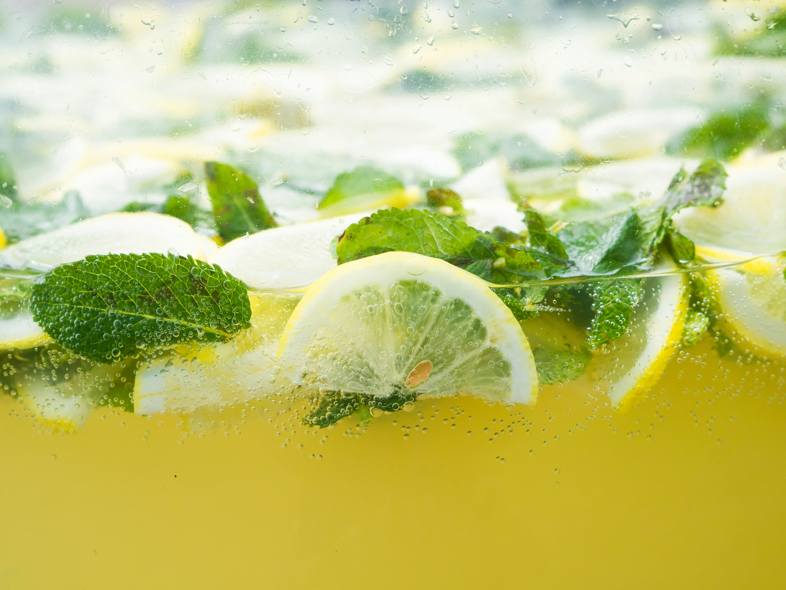
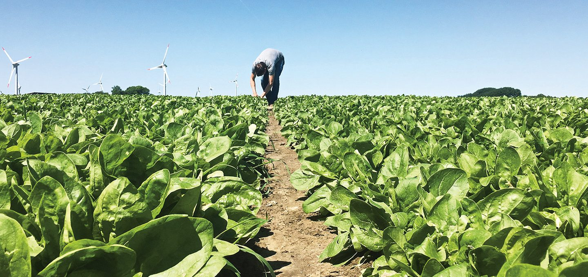
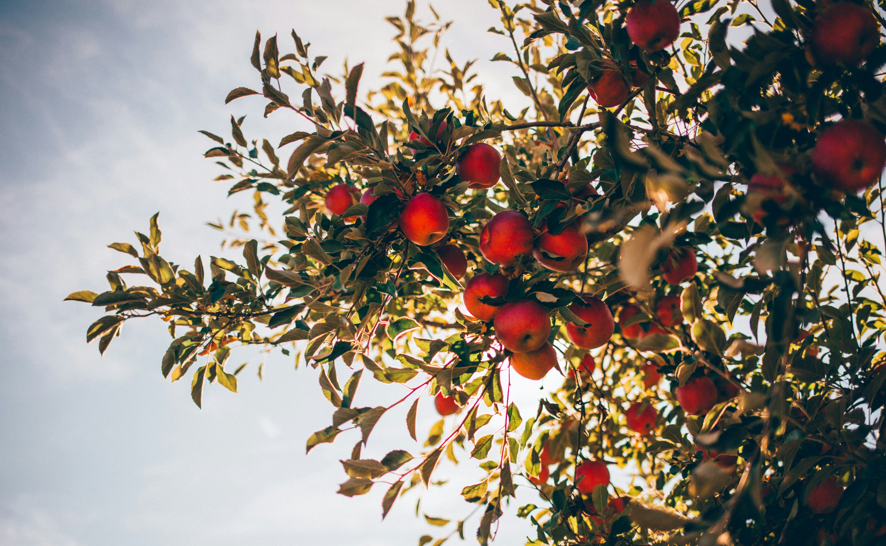
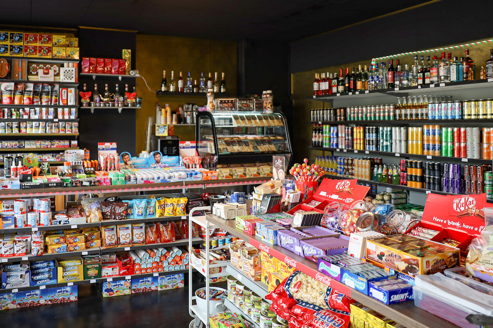

Weil KARLs mehr kann!
Ja, wir sind Kiosk – und trotzdem auch mehr. Wir probieren und entdecken gerne und sehen es als unsere Aufgabe, unsere Nachbarschaft auch Nachhaltig und kreativ zu versorgen. Check it out.
Was wir haben? Was der Rest nicht hat!
Wir bei KARLs glauben fest daran, dass Mut sich auszahlt. Deshalb bietet unser Angebot neben altbekannten Klassikern auch immer Neues. Zum Beispiel feinste Craft-Limos.
Für alle Limo-Liebhaber: Hier entlang!In deinem Zuhause? Nur von Daheim!
KARLs geht mit der Zeit: Bei uns findest du außerdem eine gewisse Auswahl frischer Produkte von regionalen Zulieferern und Partnern in Bio-Qualität. Zum Beispiel leckere Backwaren.
Ich will mehr wissen!Frische, die Versprechen hält.
Außerdem haben wir immer eine bestimmte Auswahl an regionalem, saisonalem und vor allem allerleckersten BIO Obst und Gemüse. Das beziehen wir von unsere Partnern des BIO-Bauernhof Petrick in Ilvesheim. Was wir da haben? Auf Instagram geben wir Bescheid!
Social Media und mehr? Hier entlang!Sonst so? Alles was geht!
Natürlich haben wir nicht nur Neues und mehr. Du hast keine Lust auf Experimente? Dann mach dich doch schlau, was wir so an Tabak, Alkohol, Softdrinks und Kleinigkeiten im Angebot haben!
KARLs Auswahl findest du hier.+++ Angebote für jung und alt +++ Alles, was du brauche kannst +++ Klassiker und Neuigkeiten Hand in Hand +++